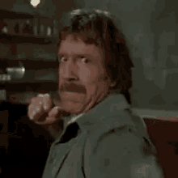
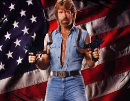
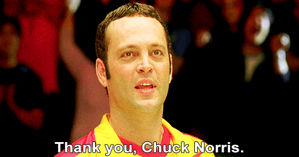

ჩაკ ნორისი
ლეგენდარული მებრძოლი და მსახიობი
ყველა ფაქტი ჩაკ ნორისის შესახებ ერთ გვერდზე!
ბიოგრაფია
სრული სახელი: Carlos Ray Norris
დაბადებული: 10 მარტი 1940, ოკლანდა
სიმაღლე: 183 სმ
ოჯახი: 2 ცოლი, 5 შვილი
კარატე ჩემპიონი
- შავი ზოლი 6 სტილში
- სამჯერ შუა წონის ჩემპიონი
- შექმნა Chun Kuk Do სტილი
- უძლეველი 1968-1974

ჰოლივუდის ვარსკვლავი
- Missing in Action (1984)
- Delta Force (1986)
- Code of Silence (1985)
- Walker Texas Ranger (TV)
- Top Dog (1995)

50+ Action ფილმი კარიერის განმავლობაში
ჩაკ ნორის ფაქტები
ფაქტი 1: ჩაკ ნორისი არ იძინებს, ის ხედავს როცა მზე იძინებს
ფაქტი 2: ჩაკ ნორისის ფეხის თითი უფრო სწრაფია ვიდრე F-16
ფაქტი 3: დედამიწა ტოვებს ჩაკ ნორისის გარშემო
ფაქტი 5: Google შეცდომის შეტყობინება ნამდვილად ნიშნავს "ჩაკ ნორისი კარგად თამაშობს"

მემკვიდრეობა
- Chuck Norris Foundation - ბავშვთა ჯანმრთელობა
- საკუთარი საკვები ბრენდი
- ინტერნეტ მემის #1 გმირი
- სამხედრო ჯილდოები ვიეტნამის ომში
- საკუთარი ვარსკვლავი Hollywood Walk of Fame-ზე
ციტატა: "მე არ ვიბრძოლე ჩემი ქვეყნისთვის, ჩემი ქვეყანა იბრძოდა ჩემთვის!"